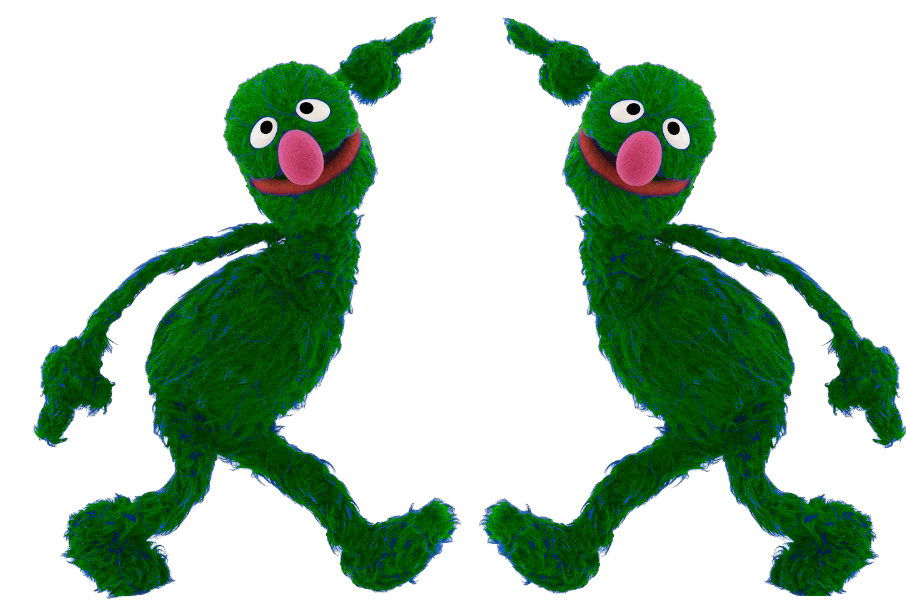

What Can Gleep Do?
This is part of a transcript from an Applied Deep Learning Lecture at Columbia University. Students may have questions about some of the topics but don't have time to review the entire video lecture or scan slides again when looking for this info. So instead, they could ask Gleep! First, we give Gleep our text in the box below.
